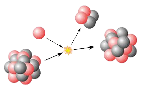

ტესტები
ნივთიერებები, ელემენტები და ატომები
შესავალი
რისგან შედგება შენი სხეული? თქვენ შეიძლება თავიდან იფიქროთ, რომ ის შედგება სხვადასხვა ორგანოსგან — როგორიცაა გული, ფილტვები და კუჭი— და რომ ეს ყველაფერი მუშაობს ერთად, რათა შენმა სხეულმა განაგრძოს არსებობა. ან შეიძლება, თქვათ, რომ თქვენი სხეული შედგება ბევრი სხვადასხვა ტიპის უჯრედისაგან. მიუხედავად ამისა, ყველაზე ფუნდამენტალურ დონეზე, თქვენი სხეული და ყველანაირი სიცოცხლე და, ასევე, არაცოცხალი სამყარო — შედგება ატომებისგან, რომლებიც ხშირად გაერთიანებული არიან უფრო გრძელ სტრუქტურებში, რომელთაც მოლეკულები ეწოდებათ. ატომები და მოლეკულები არსებობენ ქიმიისა და ფიზიკის კანონების მიხედვით, მაშინაც კი როდესაც ცოცხალი, რთული, მსუნთქავი არსების ნაწილს წარმოადგენენ. თუ თქვენ ქიმიაში ისწავლეთ, რომ ატომები ხშირად იძენენ ან კარგავენ ელექტრონებს ან ამყარებენ ბმებს ერთმანეთთან, ეს ჭეშმარიტად რჩება მაშინაც როდესაც ისინი ცოცხალ ორგანიზმში არიან. სინამდვილეში სიცოცხლე შესაძლებელი არის ზუსტად ამ მცირე ურთიერთქმედებების გამო: ატომების მრავალი კომბინაციით, ერთ უჯრედსა თუ მთლიან ორგანიზმში. იმაზე კამათიც კი არის შესაძლებელი, რომ ყველაფერი, რასაც თქვენ წარმოადგენთ, თქვენს ცნობიერების ჩათვლით, არის გვერდითი ეფექტი იმ ქიმიური და ელექტრული ურთიერთქმედებებისა, რომელიც ხდება ძალიან ძალიან ბევრ არაცოცხალ ატომს შორის! ცოცხალი არსება შედგება მიახლოებით 7,000,000,000,000,000,000,000,000,000 ატომისაგან, თქვენ სავარაუდოდ დაგჭირდებათ ქიმიის საფუძვლების ცოდნა იმისათვის, რომ შეძლოთ შეისწავლოთ ბიოლოგია და ზოგადად სამყარო. ნივთიერებები და ელემენტები ტერმინი ნივთიერება გულისხმობს ნებისმიერ რაღაცას, რაც იკავებს სივრცეს და რასაც გააჩნია მასა - სხვა სიტყვებით რომ ვთქვათ, „რაღაცეები" რისგანაც შედგება სამყარო. ნებისმიერი ნივთიერება შედგება ელემენტებისაგან, რომლებსაც გააჩნიათ გარკვეული ქიმიური და ფიზიკური თვისებები და რომელთა დაშლა შეუძლებელია ჩვეულებრივი ქიმიური რეაქციებით. ოქრო, მაგალითად, არის ელემენტი, ისევე როგორც ნახშირბადი. სულ არსებობს 118 ელემენტი, მაგრამ მხოლოდ 92 ჩნდება ბუნებრივად. დანარჩენი ელემენტების შექმნა შესაძლებელია მხოლოდ ლაბორატორიებში და ისინი არ არიან სტაბილურები. თითო ელემენტს გააჩნია თავისი ქიმიური სიმბოლო - ერთი დიდი ასო ან, როდესაც პირველი ასო „დაკავებულია" სხვა ელემენტის მიერ, მაშინ სიმბოლო ორი ასოს კომბინაციას წარმაოდგენს. ზოგი ელემენტის დასახელება მომდინარეობს მათი ინგლისური დასახელებიდან, მაგალითად C ნიშნავს ნახშირბადს (carbon) ხოლო Ca კალციუმს (calcium). სხვა ელემენტების სახელები მომდინარეობენ ლათინური დასახელებებიდან; მაგალითად, ნატრიუმის სიმბოლოა Na, რადგან ამ ელემენტს ლათინურად ქვია ნატრიუმი. ოთხი ელემენტი, რომელიც ყველაზე ხშირად გვხვდება ცოცხალ ორგანიზმებში არის ჟანგბადი (O), ნახშირბადი (C), წყალბადი (H) და აზოტი (N). ერთად ისინი ქმნიან ადამიანის სხეულის 96%-ს. არაცოცხალ სამყაროში ელემენტები გვხვდება განსხვავებული პროპორციებით, მაგალითად ბევრი ცოცხალი ორგანიზმისათვის დამახასიათებელი ელემენტი ძალიან იშვიათია დანარჩენ სამყაროში. ყველა ელემენტი და ქიმიური რეაქცია ექვემდებარება ერთნაირ ქიმიურ და ფიზიკურ კანონებს, იმის მიუხედავად წარმოადგენენ ისინი ცოცხალი სამყაროს ნაწილს თუ არაცოცხალის. ატომის სტრუქტურა ატომი არის ნივთიერების უმცირესი ერთეული, რომელსაც შენარჩუნებული აქვს ელემენტის თვისებები. მაგალითად, ოქროს მონეტა წარმოადგენს ოქროს მოლეკულების ძალიან დიდ რაოდენობას, რომლებსაც მისცეს მონეტის ფორმა და რომელშიც არის სხვა ელემენტების ძალიან მცირე რაოდენობა. შეუძლებელია ოქროს ატომების დაშლა უფრო მცირე ნაწილაკებად ისე, რომ მათ ოქროს თვისებები შეინარჩუნონ. ოქროს ატომი თავის თვისებებს იძენს იმ მცირე სუბატომური ნაწილაკებისაგან, რომლებისგანაც შედგება. ატომი შედგება ორი რეგიონისგან. პირველი არის პაწაწინა ატომური ბირთვი, რომელიც ატომის ცენტრშია მოთავსებული და შეიცავს დადებითად დამუხტულ ნაწილაკებს, რომლებსაც ვუწოდებთ პროტონებს და ნეიტრალურ, მუხტის არმქონე ნაწილაკებს, რომლებსაც ვუწოდებთ ნეიტრონებს. ატომის მეორე, ბევრად უფრო დიდი რეგიონი წარმოადგენს უარყოფითად დამუხტული ნაწილაკების, ელექტრონების „ღრუბელს", რომელიც ბირთვის გარშემოა. მიზიდულობა უარყოფითად დამუხტულ ელექტრონებსა და დადებითად დამუხტულ პროტონებს შორის ერთად კრავს ატომს. ატომების უმეტესობა შეიცავს ამ სუბატომური ნაწილაკების სამივე სახეს - პროტონებს, ელექტრონებს და ნეიტრონებს. წყალბადი (H) წარმოადგენს გამონაკლისს, რადგან ჩვეულებრივ შედგება ერთი პროტონისგან და ერთი ელექტრონისგან და არ შეიცავს ნეიტრონს. ბირთვში არსებული პროტონების რაოდენობით განისაზღვრება, თუ რომელ ელემენტს წარმოადგენს ატომი, ხოლო ბირთვის გარშემო არსებული ელექტრონების რაოდენობით განისაზღვრება, თუ რა სახის რეაქციებში მიიღებს ატომი მონაწილეობას. ქვემოთ მოცემულია სამი სახის სუბატომური ნაწილაკების ილუსტრაცია ჰელიუმის ატომისათვის, რომელიც შეიცავს ორ პროტონს. ატომის სტრუქტურა. პროტონები (დადებითი მუხტით) და ნეიტრონები (ნეიტრალური მუხტით) გვხვდებიან ერთად, ატომის ცენტრში არსებულ პაწაწინა ბირთვში. ელექტრონები (უარყოფითი მუხტით) იკავებენ დიდ სფერულ ღრუბელს, რომელიც ბირთვის გარშემოა. ამ კონკრეტულ ნახატზე მოცემულია ჰელიუმის ატომი, რომელსაც გააჩნია ორი პროტონი, ორი ნეიტრონი და ორი ელექტრონი. მოდიფიცირებული სურათის წყაროა OpenStax CNX Biology პროტონებსა და ნეიტრონებს ერთნაირი მუხტი არ აქვთ, მაგრამ მათი მასები თითქმის ერთნაირია, დაახლოებით \[1{,}67 × 10^{-24}\] გრამი. გრამები ასეთი პატარა მასის მქონე ნაწილაკებისთვის ცოტა მოუხერხებელია, ამიტომ მეცნიერებმა გადაწყვიტეს, შეექმნათ ახალი საზომი ერთეული — დალტონი, ანუ მასის ატომური ერთეული (მაე). ერთი ნეიტრონის ან ერთი პროტონის მასა თითქმის 1 მაე-ა. ელექტრონები ბევრად უფრო მცირე მასისაა, ვიდრე პროტონები და მხოლოდ 1/1800 მაე-ს იწონიან, შესაბამისად, მათი წვლილი ელემენტის ატომურ მასაში ძალიან მცირეა. მეორე მხრივ, ელექტრონები დიდ გავლენას ახდენს ატომის მუხტზე, რადგან ელექტრონს ისეთივე სიდიდის უარყოფითი მუხტი აქვს, როგორიც პროტონს - დადებითი. უმუხტო, ნეიტრალურ ატომებში ბირთვის გარშემო ორბიტაზე მოძრავი ელექტრონების რიცხვი ბირთვში არსებული პროტონების რიცხვის ტოლია. დადებითი და უარყოფითი მუხტები ერმანეთს ანეიტრალებს და, შედეგად, უმუხტო ატომს ვიღებთ. პროტონები, ნეიტრონები და ელექტრონები არიან ძალიან პატარები და ატომის მოცულობის უდიდესი ნაწილი - მეტი, ვიდრე 99 პროცენტი - წარმოადგენს ცარიელ სივრცეს. ამდენი თავისუფალი სივრცის არსებობამ შეიძლება დაგაფიქროთ, თუ რატომ არ შეუძლიათ მკვრივ საგნებს ერთმანეთში გავლა. პასუხი კი ის არის, რომ უარყოფითად დამუხტული ელექტრონების ღრუბლები ერთმანეთთან მიახლოებისას განიზიდავენ ერთმანეთს, რაც შედეგად გვაძლევს სიმყარის ჩვენებურ აღქმას.